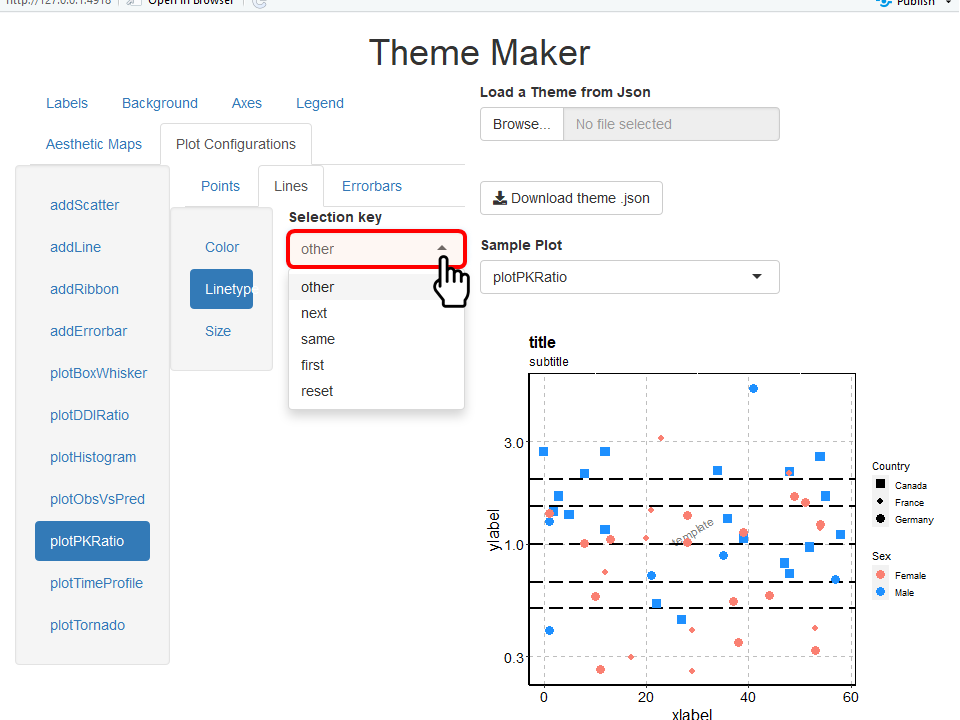

#> Loading required package: tlf1. Introduction
The aim of this vignette is to document how to create, update, and
save Theme objects using the tlf user
interface (UI) called by
runThemeMaker().
Theme objects define the default values and methods of
PlotConfiguration objects, which themselves describe the
properties of a plot (such as colors, fonts, etc.).
2. How to start
Use the function runThemeMaker() to start the
theme-maker User Interface. The function will load shiny
required for the UI and set the current theme defined by the UI.

3. How to update theme properties
On the upper left side of the UI, a navigation bar indicates the main properties that can be updated in the theme: Labels, Background, Axes, Legend, Aesthetic Maps and Plot Configurations.
In the Labels navigation bar (already available when starting the UI), font properties of the most common labels are available. The font properties of ticks and legend are available in the properties Axes and Legend. Note that Color properties use a predefined list of available colors as illustrated in the figure below, however, users can type and add their own colors (e.g. hex colors).

Properties of the watermark are available in the Labels navigation bar, and include the field Content which allows to define the content of the watermark (in this example the content is template).
The Background navigation bar includes the properties of the colors, sizes, and linetypes for each background elements (illustrated below).

The Axes navigation bar includes the properties of the axes lines (colors, sizes and linetypes) as well as the font properties of their ticks (illustrated below).

The Legend navigation bar includes the properties of the position, fonts, and background of the legend (illustrated below).

The Aesthetic Maps navigation bar defines the maps
of aesthetic properties (color, fill, linetype, shape, size and alpha).
Such maps can be used by PlotConfiguration objects to
define how they will plot points,
lines, ribbons, and
errorbars. Consequently, these properties are paired
with the Plot Configurations navigation bar.
The Plot Configurations navigation bar defines the
default aesthetic selection properties for each type of
PlotConfiguration objects: it defines how to plot
points, lines,
ribbons, and errorbars for each type
of atom or molecule plot available in the tlf package.
To illustrate these properties, the example below will update these properties for a PK ratio plots
First, select plotPKRatio in the list of sample plots to
check the current features of the theme. The list of sample plots
available in the UI corresponds to all the atom and molecule plot
functions defined in the tlf package.

Then, the Aesthetic Maps indicates for each aesthetic property pairs of rank-value for the aesthetic map. The current color map defines 30078D7 (blue color).

The values can be changed as illustrated below where color ranked 1 was set as salmon and color ranked 2 was set as dodgerblue.

On the Plot Configurations navigation bar, select the plotPKRatio (figure below). Three selection keys are available for this plot as it includes points, lines and optionally error bars. The current selection key is reset which resets and uses in sequence the values of the color map.

The example below updates how the lines are drawn in the PK ratio plots. Currently, the selection key is defined as Other and the corresponding value has longdash which is translated as the PK ratio lines are all plotted as long dashes:

To update how lines are drawn in PK ratio plots, you can use a default linetype in the selection key Other or use the linetype map defined in the Aesthetic Maps navigation bar. Different keys are available when using the map:
- next will select the next values of the map every time a line is added
- same will select the same value of the map every time a line is added
- first will select the first value of the map every time a line is added
- reset will select the next values of the map every time a line is added but resetting the count before the call of the plot function
- other allows you to specify a user defined linetype(s) not related to the map

By selecting next, the PK ratio plot uses the next value in the linetype map every time a line is added. In this example, this leads to draw the ratio of 1 as a solid line, the ratio of 1.5 as a longdash line and the ratio of 2 as a dotted line.

4. How to export and re-use a theme
The theme-maker UI allows an easy way to save your theme properties
as a json file. This file can be reloaded when needed using the function
loadThemeFromJson(jsonFile) and can be used as the current
theme with the function useTheme(theme).
To save your current theme using the UI, click on Download theme .json as illustrated in the figure below and indicate the location/name for saving the theme file. Please remember to specify the .json file extension while saving the theme to a file.

The UI also allows you to load a previously saved theme in
.json file using the button Load a Theme from
Json as illustrated in the figure below.